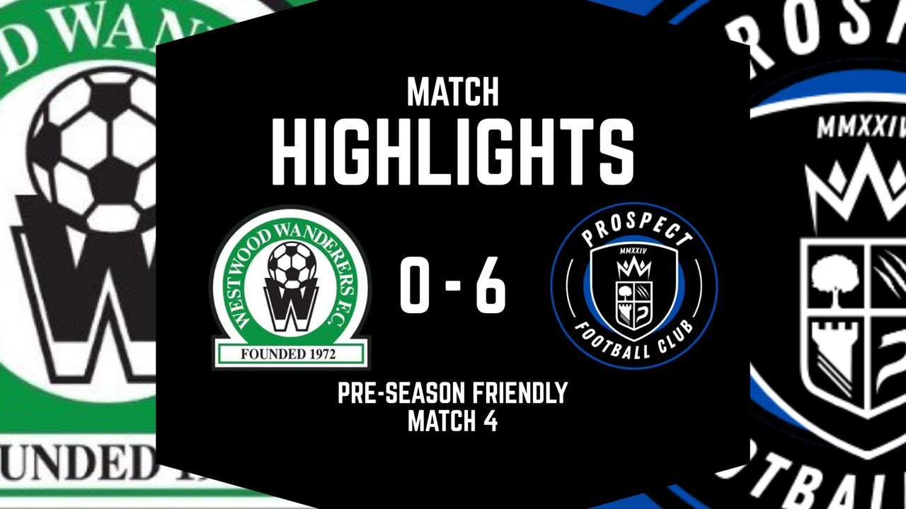

New signing with real flair. Jeffery is sharp on the ball, creative in attack, and dangerous from midfield or out wide. A dynamic player who makes things happen.

Get ready as PROSPECT FC takes the spotlight in this seasons showcase game!
Its a chance to show what were made of — skill, teamwork, and passion all on display.
Dont miss the action as we step up and represent with pride.
Come support the squad and be part of something special!

Matchday Results
A brilliant performance from the boys today! Our 4th pre-season friendly ends in a 6-0 win away against Westwood Reserves.
From a solid defence, hard working midfield and clinical attack, the boys displayed everything today!
Good luck to Westwood Reserves next season.

Mikolaj Watroba Ready to Shine Again After Leading League in Assists
Last Season
Mikolaj Watroba is gearing up for another influential season after
finishing last year as the leagues top assist provider. Known for his
vision, creativity, and ability to unlock defences, Watroba has become
the heartbeat of his teams attacking play. With form and confidence on
his side, fans will be eager to see if he can continue delivering
game-changing passes this season.

Dawid Jarebowski Poised for Another Standout Season After Topping Last
Years Scoring Charts.
Dawid Jarebowski is set to light up the pitch once again this season
after finishing last campaign as the league's top scorer. With his sharp
eye for goal and relentless work ethic, Dawid has become a key figure
to watch. Fans and rivals alike will be keeping a close eye on whether
he can replicate — or even surpass — last seasons impressive form.